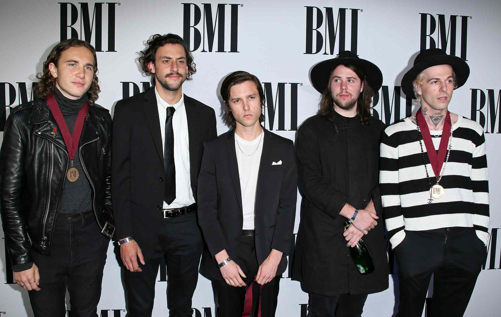
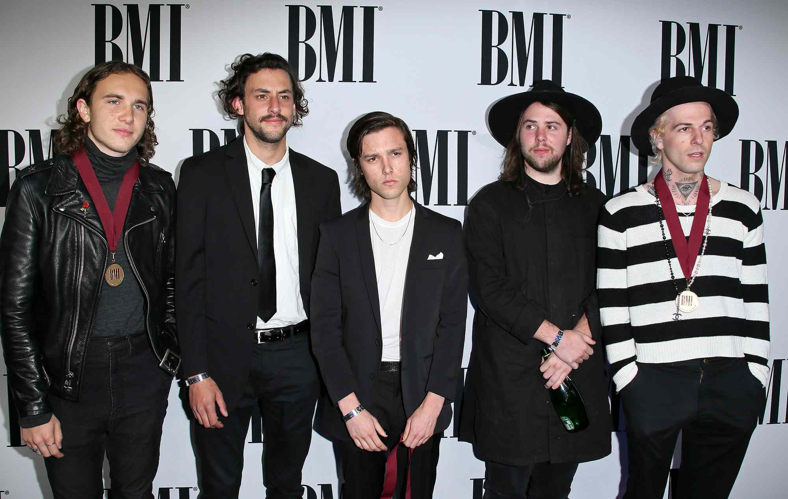
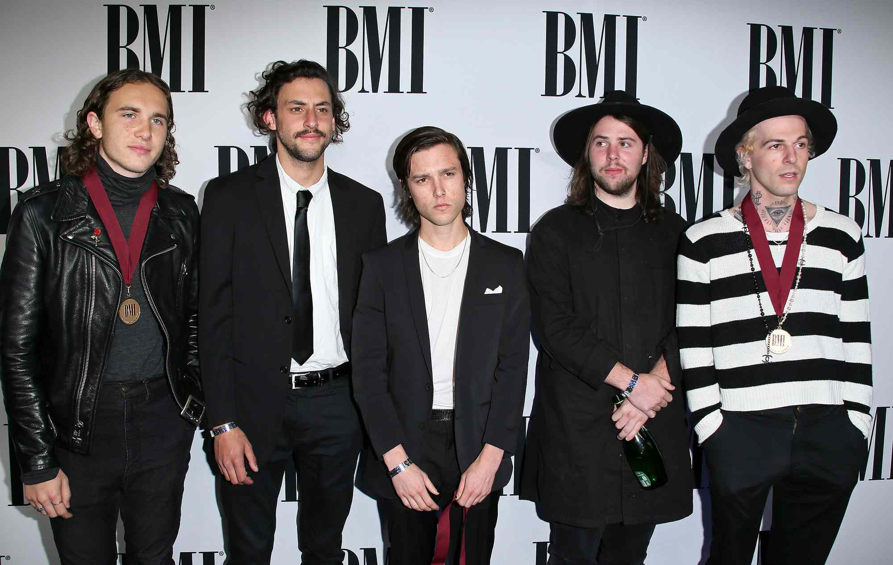

Sobre a Banda
A banda The Neighbourhood foi formada em 2011 em Los Angeles, Califórnia, e rapidamente ganhou destaque na cena musical com seu som distintivo que mistura rock alternativo, R&B e elementos eletrônicos.

 



A banda The Neighbourhood foi formada em 2011 em Los Angeles, Califórnia, e rapidamente ganhou destaque na cena musical com seu som distintivo que mistura rock alternativo, R&B e elementos eletrônicos.
